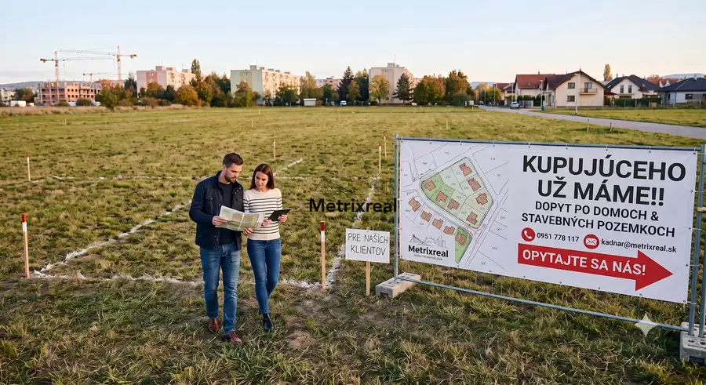

Dopyt - hľadáte kupujúceho pre váš pozemok alebo dom? mám ho pre vás !!!
Podunajské Biskupice, Bratislava

- Plocha600 m²
- StavPôvodný stav
O nehnuteľnosti
HĽADÁTE KUPUJÚCEHO PRE VÁŠ POZEMOK ALEBO DOM? !!!!! !!!! MÁM HO PRE VÁS !!! !!!!Vážení vlastníci nehnuteľností,vzhľadom na nedávny úspešný predaj niekoľkých pozemkov v lokalite Podunajské Biskupice evidujem zvýšený dopyt zo strany aktívnych kupujúcich, ktorí v tejto časti mesta (ale aj v jej blízkom okolí) momentálne intenzívne hľadajú vhodnú nehnuteľnosť na kúpu.Moji klienti hľadajú predovšetkým stavebné pozemky s výmerou okolo 600 m² (v závislosti od konkrétneho klienta máme dopyty aj na menšie či, naopak, väčšie výmery), prípadne rodinné domy. Ide o vážnych záujemcov, ktorí sú finančne pripravení na okamžitú kúpu.Ak v najbližšom období plánujete predávať svoj pozemok alebo rodinný dom v Podunajských Biskupiciach či v inej lokalite BA, neváhajte ma kontaktovať. Vďaka priamemu prepojeniu s pripravenými kupujúcimi si výrazne uľahčíte a urýchlite celý náročný proces spojený s predajom nehnuteľnosti a vyhnete sa zdĺhavému hľadaniu na realitných portáloch.Rád vám pomôžem predať vašu nehnuteľnosť rýchlo, bezpečne a za maximálnu možnú cenu.S úctou,Miroslav Kadnár tel: 0951 778 117 - Metrixrealemail: kadnar@metrixreal.sk
Parametre
- Druh
- Rodinný dom
- Dátum zverejnenia
- 16. 07. 2026
- Energetický certifikát budovy
- nie je
- Plocha pozemku
- 0 m²
- Počet nadzemných podlaží
- 1
- Stav nehnuteľnosti
- Pôvodný stav
- Terén pozemku
- Rovinatý
- Typ
- Predaj
- Typ konštrukcie
- Iná
- Zastavaná plocha
- 200 m²
- Úžitková plocha
- 600 m²
Kde to je


Mohlo by Vás zaujímať
 Komerčné priestoryNové
850 080 €PESTOVATEĽSKÁ | RUŽINOV | Reprezentatívny obchodný priestor 238 m² na prízemí s výkladmi pri IKEA a Avione | Kompletná rekonštrukcia | Bez provízie
Ružinov, Bratislava
238 m²
Komerčné priestoryNové
850 080 €PESTOVATEĽSKÁ | RUŽINOV | Reprezentatívny obchodný priestor 238 m² na prízemí s výkladmi pri IKEA a Avione | Kompletná rekonštrukcia | Bez provízie
Ružinov, Bratislava
238 m²
 Komerčné priestoryNové
751 291 €PESTOVATEĽSKÁ | RUŽINOV | Investičný kancelársky trakt 285 m² (celé 2. NP) s fungujúcimi nájomcami pri IKEA a Avione | Výnos od 1. dňa | Bez provízie
Ružinov, Bratislava
285.12 m²
Komerčné priestoryNové
751 291 €PESTOVATEĽSKÁ | RUŽINOV | Investičný kancelársky trakt 285 m² (celé 2. NP) s fungujúcimi nájomcami pri IKEA a Avione | Výnos od 1. dňa | Bez provízie
Ružinov, Bratislava
285.12 m²
 DomNové
275 000 €Samostatný RD s garážou, slnečným pozemkom a projektom rekonštrukcie – Krajinská ul., Podunajské Biskupice
Podunajské Biskupice, Bratislava
122 m²
DomNové
275 000 €Samostatný RD s garážou, slnečným pozemkom a projektom rekonštrukcie – Krajinská ul., Podunajské Biskupice
Podunajské Biskupice, Bratislava
122 m²